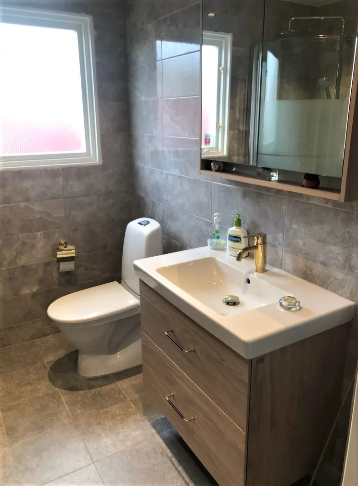
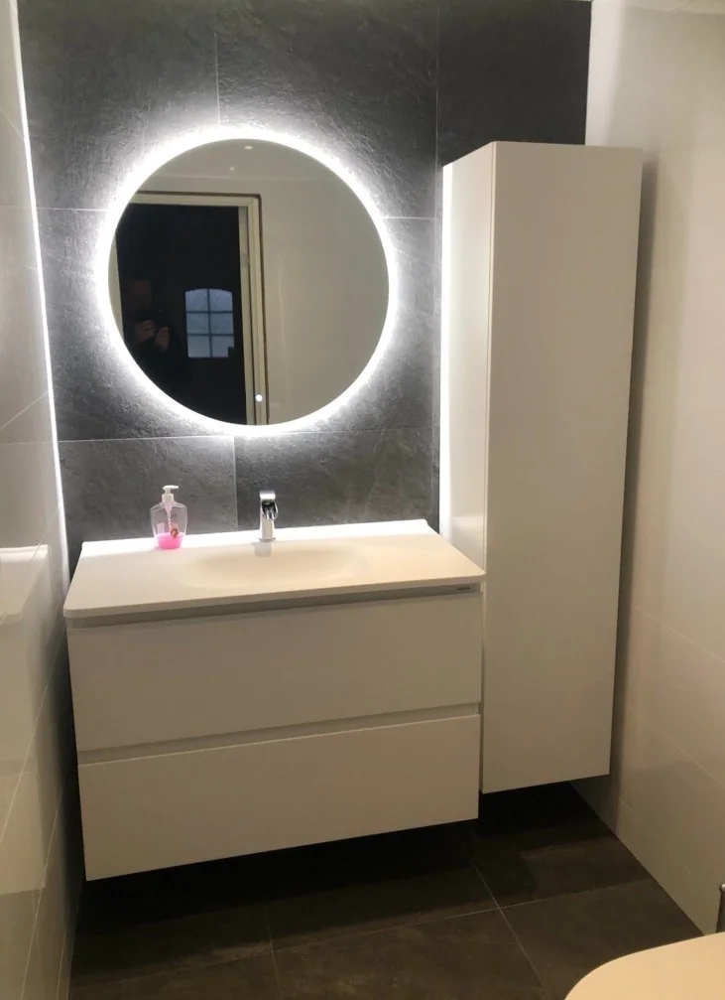
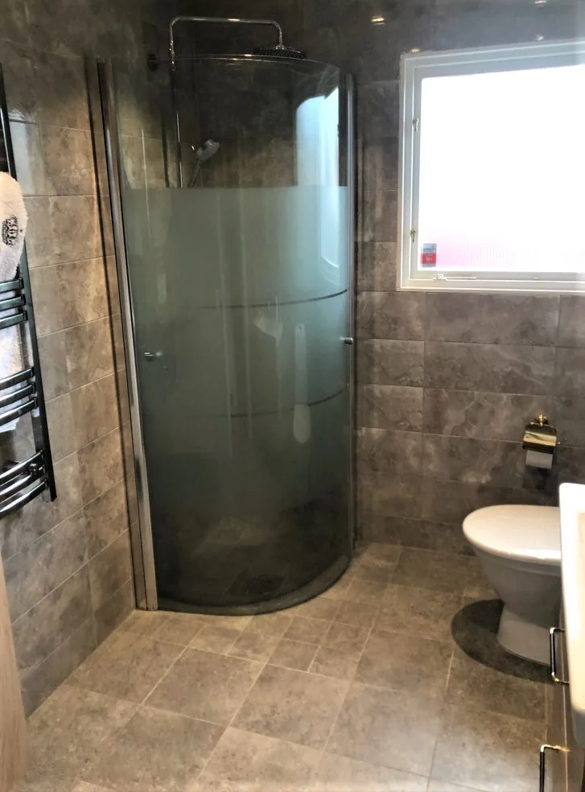
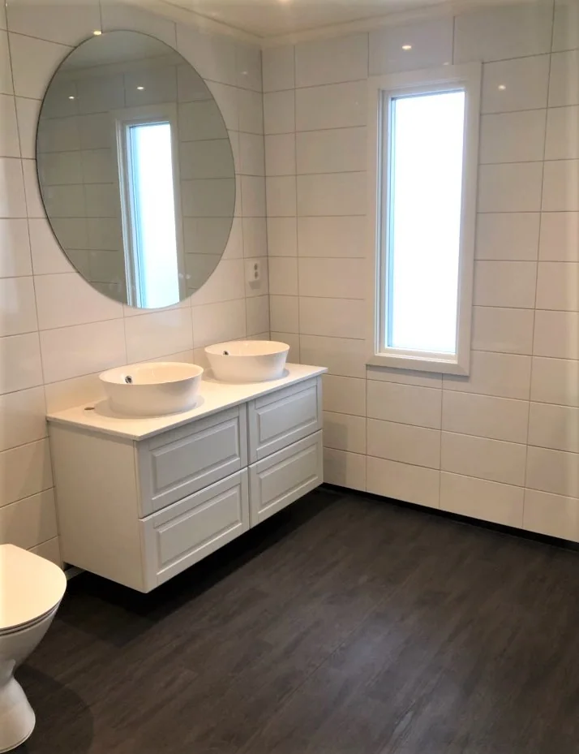

Lugnare morgnar.
Skönare kvällar.
Ett badrum ska vara fint att se på och enkelt att leva med. Vi hjälper dig att få ihop funktion, material och hantverk.
Genomtänkt.
Ända in i detaljerna.
Förvaring som fungerar. Plats att röra sig. Kakel, ljus och inredning som känns rätt tillsammans. Vi hjälper dig att planera ett badrum utifrån rummet och dina önskemål.
Peter Svensson ansvarar för plattsättningen och har utbildning inom plattsättning i våtrum. Med våra samarbetspartners håller vi ihop de delar av renoveringen som behöver elektriker och rörmokare.
- Planering och materialval
- Kakel, klinker och plattsättning
- Montering och snickeriarbeten
- Samordning av yrkesgrupper

Bra att tänka på.
Några av våra råd när du börjar planera ett nytt badrum.
Ge duschen utrymme
Utgå gärna från minst 90 × 90 cm för en bekväm duschplats, när rummets förutsättningar tillåter. En genomtänkt planering märks varje dag.
Låt materialen samspela
Välj golv, väggar och inredning tillsammans. Material som harmonierar ger ett lugnare uttryck, och ett noggrant utförande är lika viktigt som utseendet.
Badrum i olika uttryck.
Se alla våra arbeten






Vad vill du
komma hem till?
Berätta om dina planer. Peter hjälper dig vidare med köket, badrummet eller nästa renovering.